飞牛 fnOS 桌面，内网直连。
navidrome
自建漫画库（Kavita），内外网均可访问。
网页小说阅读，内网直连。
迅雷
BT 下载器，内网直连。
BT/PT 下载器，内网直连。
AI 绘图工作台，仅在本机浏览器有效（127.0.0.1）。
开源堡垒机，是符合 4A 规范的专业运维安全审计系统，主要用于家庭网络资产统一管理。
出口网关，核心路由控制台。
家庭 WiFi 网关控制台（科学）。
工控机 Proxmox 虚拟化管理平台。
未配置 待定 VPS Proxmox 虚拟化管理平台。

服务可用性监控，内网直连。
飞牛 fnOS 桌面，内网直连。